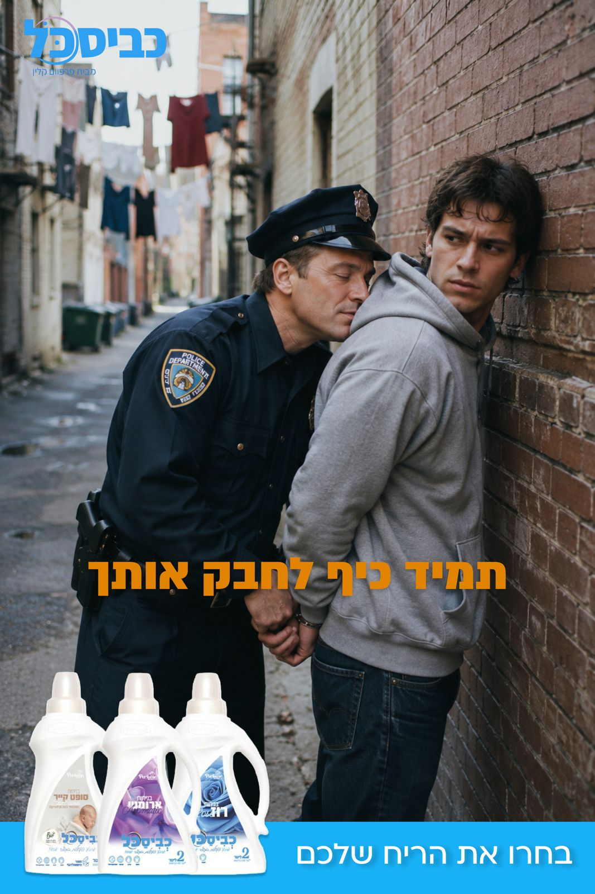

קמפיין פרינט — "עם כביסכל, תמיד כיף לחבק אותך" · בחרו את הריח שלכם
קמפיין
המרדף
דמויות
אדם (25) — פרקוריסט אתלטי ואנרכיסט, לובש קפוצ׳ון ומכבס עם כביסכל.
רמי (40) — שוטר מעט מגושם אך נחוש.
לוקיישן
כרם התימנים ושוק הכרמל.
מהלך הסרט
-
שוט 01 · פתיחה
אדם מרסס במהירות גרפיטי צבעוני על קיר באחת מסמטאות הכרם. בקצה הסמטה מופיע רמי. אדם מרים מבט — ושניהם קולטים זה את זה.
אדם, לעצמו: ״שיט״
-
שוט 02 · המרדף מתחיל
אדם מרים את התיק ומתחיל לרוץ. רמי יוצא בעקבותיו.
רמי: ״אוו! עצור!״
-
שוט 03 · פרקור
מרדף קצבי: אדם קופץ מעל גדרות, מטפס מדרגות בקלילות ורץ בסמטאות צרות. רמי מתנשף, אבל לא מוותר.
פסקול וסאונד: מוזיקה קלילה ומהירה, נשימות קצרות, צעדים מהירים וקפיצות.
-
שוט 04 · השוק
אדם מחליק מתחת לסולם ורמי נתקע לרגע. בהמשך אדם עובר דרך השוק, מפיל בטעות ארגז עגבניות ורץ הלאה.
המוכר: ״וואו, בוא הנה! יא מניאק!״
רמי מתנצל בפני המוכר המופתע וממשיך במרדף.
-
שוט 05 · אין מוצא
רמי סוגר על אדם בסמטה צרה ללא מוצא, מצמיד אותו לקיר ואוזק את ידיו מאחורי גבו.
רמי, מתנשף: ״ת׳בטח חושב שת׳אומן?!״
-
שוט 06 · הריח
בשוט קרוב רמי נצמד לאדם יתר על המידה. לפתע הוא עוצר, מרחרח באוויר ואז את הקפוצ׳ון של אדם.
רמי, מבולבל: ״בונא, מה זה הריח?״
קריינות ופקשוט: ״כביסכל. תמיד כיף לחבק אותך.״
הג׳ודו
מהלך הסרט
-
שוט 01 · הקרב
שני ג׳ודוקא נלחמים ונצמדים באחיזה קרובה.
-
שוט 02 · הניחוח
אחד מהם מריח מחליפת היריב ניחוח משכר שמתחיל להוציא אותו מריכוז.
-
שוט 03 · אקסטרים קלוז־אפ
הוא שואף אוויר דרך האף, נעצר לרגע ומתמסר לריח.
הג׳ודוקא: ״וואו״
-
שוט 04 · איפון
הוא יוצא מריכוז, היריב מנצל את הרגע ומטיל אותו באיפון שמסיים את הקרב.
-
שוט 05 · סיום
קריינות ופקשוט: ״כביסכל. תמיד כיף לחבק אותך.״